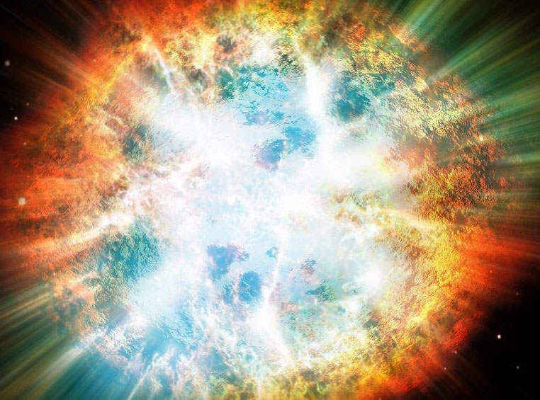

Жизнь вселенной
Появление Вселенной
Учёные считают, что Вселенная возникла 15 млрд лет назад с Большого взрыва. Американский астроном Эдвин Хаббл смог доказать, что Вселенная непрерывно расширяется и все галактики удаляются друг от друга. Математики смогли описать как выглядела Вселенная миллионы лет назад. Всё пространство заключалось в очень малом объёме. Расширение Вселенной началось с события, которое назвали Большим взрывом.

Эволюция Вселенной
- Большой взрыв.
- Спустя 100 секунд возникли первые ядра водорода и гелия.
- 2 млн лет. Образование звёзд и галактик.
- 5 млрд лет. Формирование Млечного Пути.
- 4.5 млрд лет. Образование Земли.
Будущее Вселенной
Существует две версии относительно будущего нашей Вселенной:
- Большое сжатие – Вселенная под действием силы тяготения тёмной материи приостановит расширение и сожмётся в единую точку.
- Вечное расширение – Вселенная будет вечно расширяться.